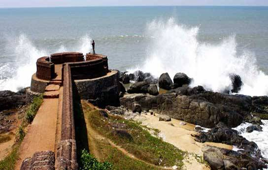
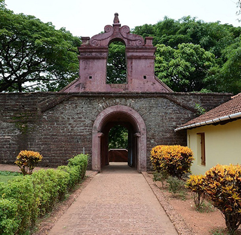
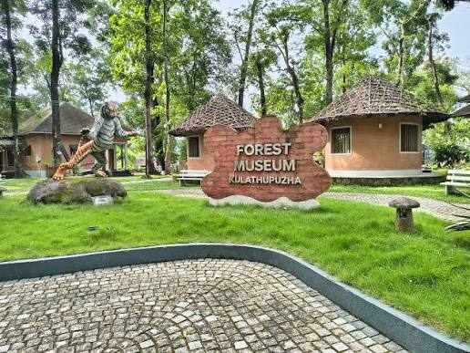
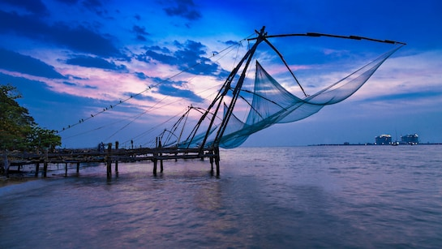
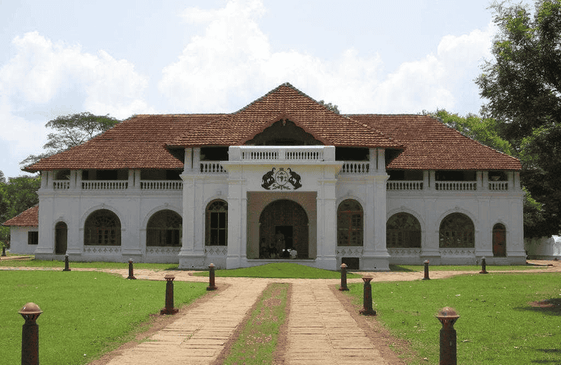
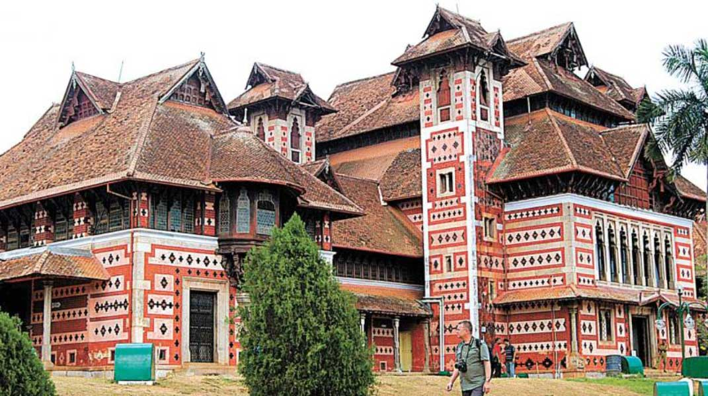
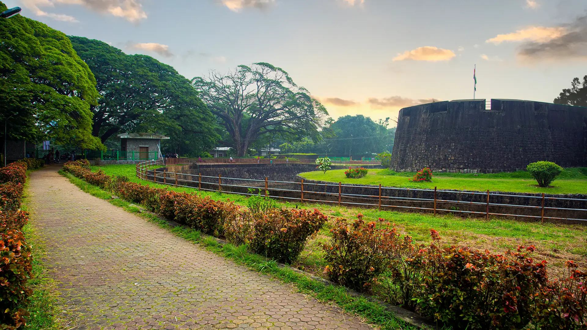
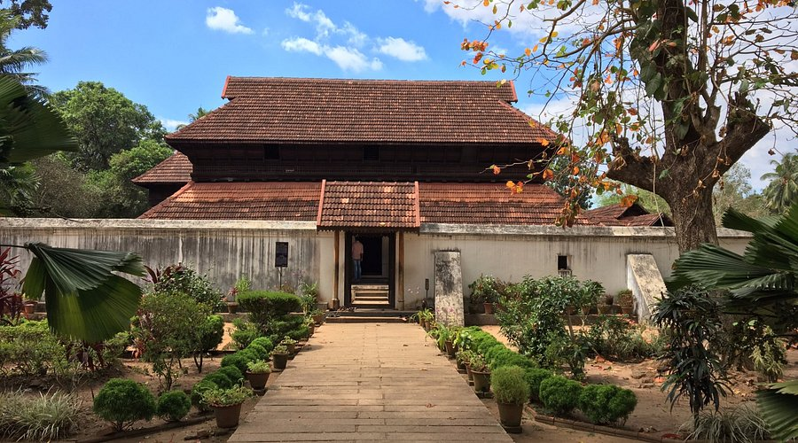

Timing: 8:00 AM - 5:00 PM
Entry Fee:rs.15 (Adults)
Built in the 17th century, Bekal Fort is the largest and best-preserved fort in Kerala.
Nearby Restaurants:

Timing: 8:00 AM - 6:00 PM
Entry Fee:rs.10
Built in 1708 by the British East India Company, showcasing colonial military architecture.
Nearby Restaurants:

Timing: 10:00 AM - 6:00 PM (Closed on Mondays)
Entry Fee:rs.30 (Adults), rs.10 (Children)
Kerala's first forest museum, showcasing biodiversity, wildlife, and forest resources.
Nearby Restaurants:

Timing:9:00 AM - 6:00 PM
Entry Fee:Free
Fort Kochi reflects Portuguese, Dutch, and British colonial history.
Nearby Restaurants:

Timing: 10:00 AM - 6:00 PM (Closed on Mondays)
Entry Fee:rs.30 (Adults), rs.10 (Children)
Portuguese palace with murals.
View Location
Timing: 10:00 AM - 5:00 PM (Closed on Mondays)
Entry Fee:Free
Historic museum in Trivandrum.
View Location
Timing: 9:00 AM - 6:00 PM (Closed on Mondays)
Entry Fee:rs.20
Historic fort built by Hyder Ali.
View Location
Timing: 10:00 AM - 6:00 PM (Closed on Mondays)
Entry Fee:rs.30
Traditional Kerala architecture.
View Location